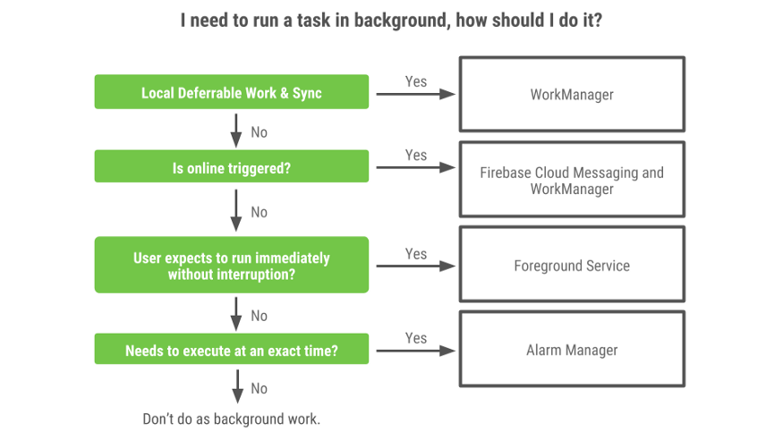

Content provider is a way to share data from your application for general use. Most of the time it is related to databases. Creation of content provider resembles creation of database helper class. We use SQLiteOpenHelper to deal with database and implement methods query, insert, update, delete from ContentProvider class.
ContentProvider uses Uri: content://<authority>/<path>/<id>
The WorkManager API makes it easy to schedule deferrable, asynchronous tasks that are expected to run even if the app exits or device restarts.
WorkManager is an Android library that runs deferrable background work when the work’s constraints are satisfied.
WorkManager is intended for tasks that require a guarantee that the system will run them even if the app exits.
In the case of WorkManager, it’s best for background work that has to finish and is deferrable.
WorkManager offers the following benefits: